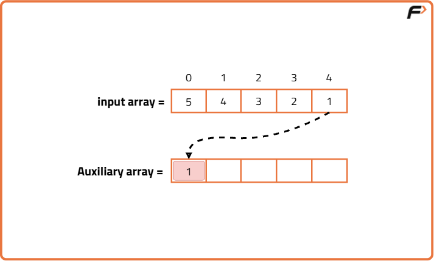
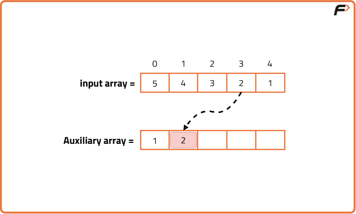
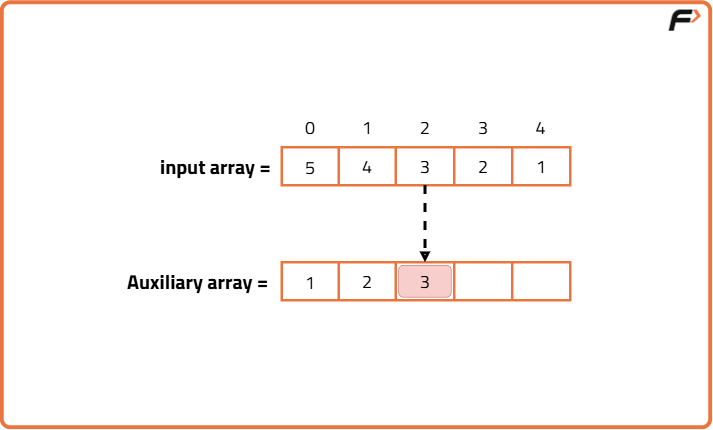
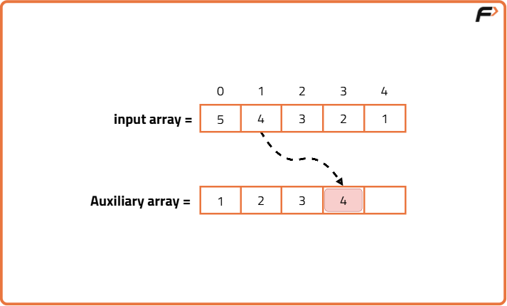
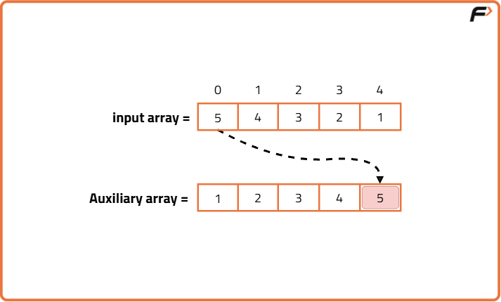
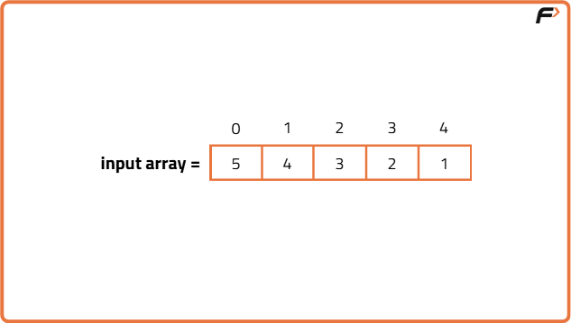
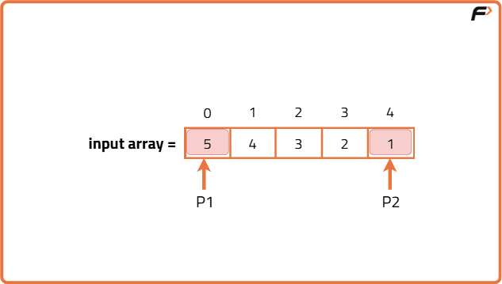
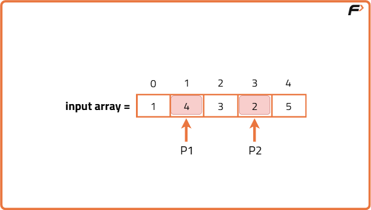
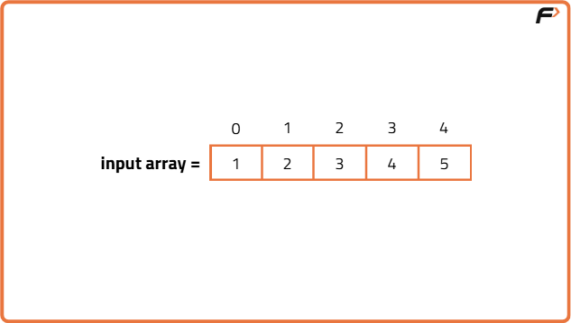

Reverse a given Array
Problem Statement: You are given an array. The task is to reverse the array and print it.
Examples
Input: N = 5, arr[] = {5,4,3,2,1} Output: {1,2,3,4,5} Explanation: Since the order of elements gets reversed the first element will occupy the fifth position, the second element occupies the fourth position and so on.
Input: N=6 arr[] = {10,20,30,40} Output: {40,30,20,10} Explanation: Since the order of elements gets reversed the first element will occupy the fifth position, the second element occupies the fourth position and so on.
Disclaimer: Here is the practice link to help you assess your knowledge better. It's highly recommend trying to solve it before looking at the solution.
Brute Force Approach
Algorithm
- Initialize an empty array of the same size as the original array.
- Start a loop from the last index of the original array and go backward.
- For each element while going backward, insert it at the current forward index of the new array.
- Continue until all elements are copied in reverse order.
- Return or print the reversed array.





Code
#include <bits/stdc++.h>
using namespace std;
class Solution {
public:
// Function to reverse an array
vector<int> reverseArray(vector<int>& arr) {
// Get the size of the array
int n = arr.size();
// Create a new vector to store the reversed array
vector<int> ans(n);
// Loop through the array from start to end
for (int i = 0; i < n; i++) {
// Place the element from end of arr into beginning of ans
ans[i] = arr[n - 1 - i];
}
// Return the reversed array
return ans;
}
};
// Driver code
int main() {
// Input array
vector<int> arr = {1, 2, 3, 4, 5};
// Create object of Solution class
Solution obj;
// Call the reverseArray function
vector<int> result = obj.reverseArray(arr);
// Print the reversed array
cout << "Reversed Array: ";
for (int num : result) {
cout << num << " ";
}
cout << endl;
return 0;
}
Complexity Analysis
Time Complexity: O(n) Each element is visited once in a loop, where n is the number of elements in the input array.
Space Complexity: O(n) An additional array of the same size is used to store the reversed elements.
Better Approach
Algorithm
- Initialize a pointer p1 at the start of the array (index 0).
- Initialize another pointer p2 at the end of the array (index n - 1).
- While p1 is less than p2, do the following:
- Swap the elements at positions p1 and p2.
- Increment p1 by 1.
- Decrement p2 by 1.
- Continue this process for only the first n/2 elements of the array.
Note: Swapping all n elements instead of just n/2 would result in the array being reversed twice, which brings it back to its original form.




Code
#include <bits/stdc++.h>
using namespace std;
class Solution {
public:
// Function to reverse the array in-place
void reverseArray(vector<int>& arr) {
// Initialize pointer to the beginning of the array
int p1 = 0;
// Initialize pointer to the end of the array
int p2 = arr.size() - 1;
// Loop until the two pointers meet in the middle
while (p1 < p2) {
// Swap the elements at p1 and p2
swap(arr[p1], arr[p2]);
// Move the left pointer one step to the right
p1++;
// Move the right pointer one step to the left
p2--;
}
}
};
// Driver code
int main() {
// Create a Solution object
Solution sol;
// Input array
vector<int> arr = {1, 2, 3, 4, 5};
// Call the reverse function
sol.reverseArray(arr);
// Print the reversed array
for (int num : arr) {
cout << num << " ";
}
return 0;
}
Complexity Analysis
Time Complexity: O(n) Where n is the number of elements in the array. Each element is visited at most once due to the two-pointer approach.
Space Complexity: O(1) No extra space is used other than a few pointers and variables. The array is reversed in-place.
Built-in Library Function Approach
Algorithm
C++ (using std::reverse from STL): The Standard Template Library provides a built-in reverse() function in <algorithm >, which reverses the contents of a container in-place. It uses two pointers internally to swap elements from both ends toward the center, making the solution efficient and concise.
Java (using Collections.reverse()): In Java, the Collections.reverse() method can be used to reverse a list in-place. Arrays need to be converted to a list first, as the Collections utility works with List types, not primitive arrays.
Python (using slicing [::-1]): In Python, array slicing with a step of -1 creates a reversed copy of the array. It doesn’t reverse in-place unless you explicitly overwrite the original array with the result.
JavaScript (using array.reverse()): JavaScript arrays come with a built-in reverse() method which modifies the array in-place by swapping elements from front to back.
Code
#include <bits/stdc++.h>
using namespace std;
class Solution {
public:
// Function to reverse the array using STL reverse function
void reverseArray(vector<int>& arr) {
// Use STL reverse to reverse array in-place
reverse(arr.begin(), arr.end());
}
};
// Driver code
int main() {
// Input array
vector<int> arr = {1, 2, 3, 4, 5};
// Create Solution object
Solution obj;
// Call function to reverse the array
obj.reverseArray(arr);
// Output the reversed array
for (int num : arr) {
cout << num << " ";
}
cout << endl;
return 0;
}
Complexity Analysis
Time Complexity: O(n), because each element is visited once and possibly swapped once with its mirror index.
Space Complexity: O(1) for C++, Java, and JavaScript (in-place), but O(n) for Python slicing since it creates a new list and then assigns back (unless using two pointers).